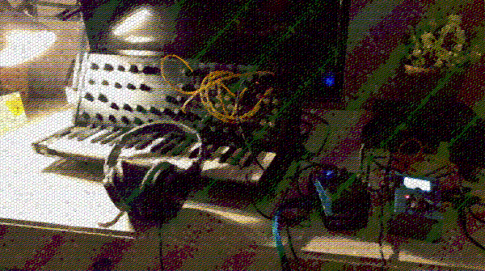

Sounds & Audio
Ever since I was a child, I loved sounds. Over the years, I've explored computers, drums, bass guitars, and modular / hardware synthesizers in order to chase soundscapes, drone metal, ambient textures, and experimental electronica. Self-taught, minimal, and unfiltered.

voidwave-lab Tools
O serie de unelte software și generatoare audio open source axate pe muzică experimentală, glitch și texturi ambient. Proiectate cu arhitectură minimalistă, control nemijlocit al parametrilor și estetica brută de laborator electronic.
Modular Synthesizer
Sintetizator software modular cu rutare flexibilă de semnale CV și audio. Conceput pentru sound design experimental, patch-uri generative, modulație încrucișată și drone soundscapes complexe.
Korg MS-20 Mini Clone
Clonă și emulare software a sintetizatorului semi-modular clasic. Reproduce comportamentul agresiv și neliniar al filtrelor duale rezonante (High-Pass & Low-Pass), matricea de patch externă și caracterul analogic brut.
Test Equipment Workbench
Studio virtual de muzică electronică timpurie, inspirat de laboratoarele anilor '50-'60 (WDR Köln, BBC Radiophonic). Bazat pe generatoare de semnal de laborator, filtre pasive, atenuatoare și tehnici clasice de procesare a tonului.
Musical Projects
Scentient Pencils
The name under which I sometimes put out various recordings or live sessions. Born at the beginning of 2020, while experimenting with ambient sounds in my living room. Mainly revolving around hardware synths, some acoustics, sound textures, ambient soundscapes, and field recordings.
Sentem
My former solo project active between 2011 and 2016. Drone rock, drone metal, dark ambient, and experimental guitar textures. Probably my favorite release is the “Alean” EP (November 2014), blending dark ambient, droney guitars, and subtle folk elements.
Versta
A short-lived moniker. The most notable recording is a live experimental electronica session titled Versta Septentrionalica.
Soul Overload
Quite a cheesy teenage name, but it was what it was. My very first attempts at solo recordings. Three surviving tracks are preserved on the Internet Archive.
Tulbur
A project started with two good friends and colleagues in 2009. Grunge and Tool-like influences. Played bass and drums.